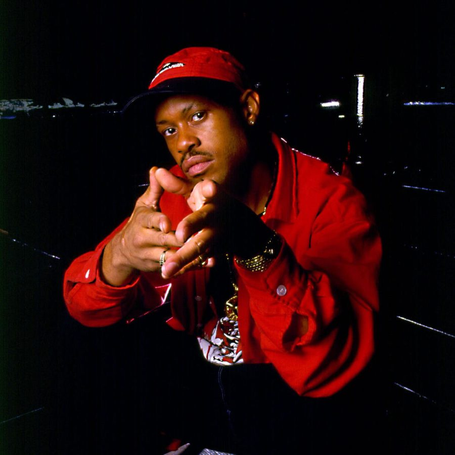

Guru [Audio]: Reinventing the mixtape, Jazzmatazz style


STREAMING AUDIO INTERVIEW
In 2008, US rapper Guru can still boast one of the most commanding presences in hip hop. Known the world over for the part he played in the seminal Gang Starr duo along with DJ Premier, he’s also revered for pushing the boundaries of hip hop with the revered Jazzmatazz series, which fused his rap with live jazz to deliver groundbreaking results. And last year, Guru finally revived the Jazzmatazz concept after a lengthy seven year hiatus with Vol 4: The Hip-Hop Jazz Messenger. If this wasn’t enough for fans, this year Guru is back with a special companion piece Jazzmatazz: The Mixtape. And it’s Guru reinventing the mixtape, evoking the old-school NYC sound while keeping one eye still firmly fixed on the future.
As Guru himself describes with his trademark bravado, “It’s the first Jazzmatazz dedicated to the underground… Jazzmatazz itself is a sophisticated project, and even though we’ve been getting all sorts of love from the underground cats, we just wanted to make a record for them,” he says. “It’s a statement of what hip hop represents – back to lyricism, back to solid New York respectable production. Not to take anything away from the ‘Dirty South’ sound, but New York is where it all came from. So to be able put New York back on the map, we worked with artists who we feel should be getting a bigger level of respect and recognition.”
With Guru still taking his sound all over the world, and determined to keep taking hip hop in exciting new directions, it seems there’s plenty of life left in the Jazzmatazz concept yet. ITM’s Angus Paterson talks to Guru and his ‘super producer’ Solar about all things Jazzmatazz... As well as working with Ferry Corsten!
Guru’s Jazzmatazz: The Mixtape ‘Back To The Future’ is out now in Australia record stores through Inertia.